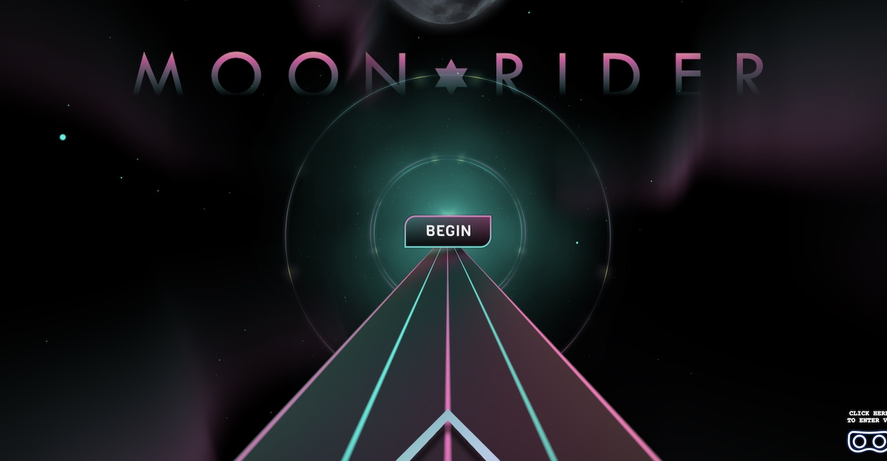
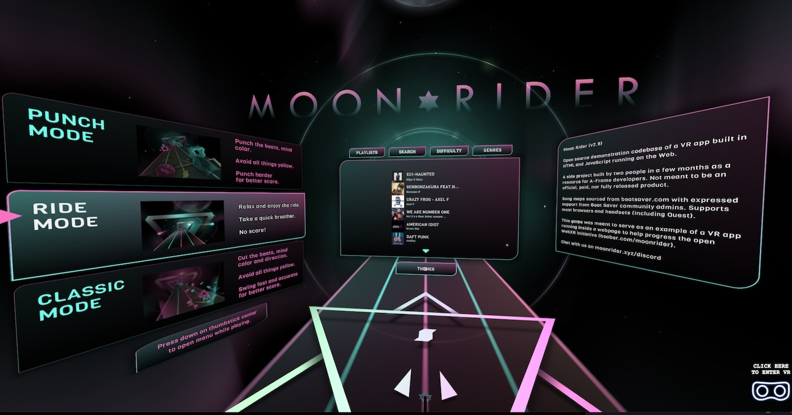
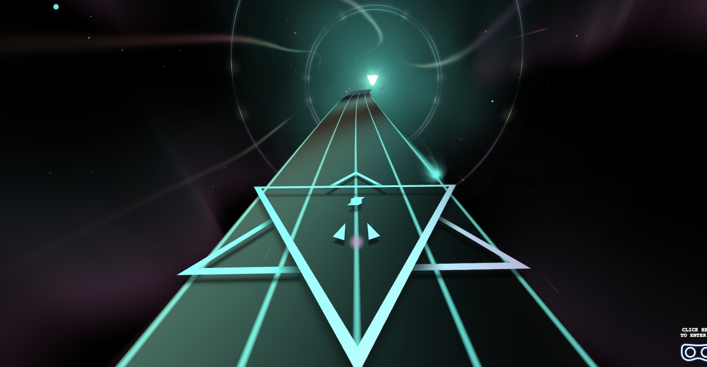
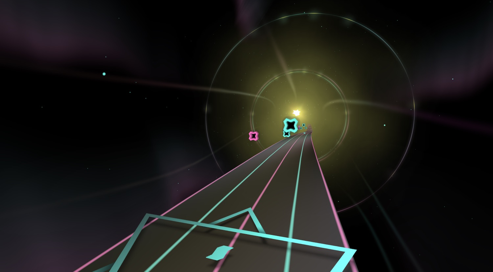
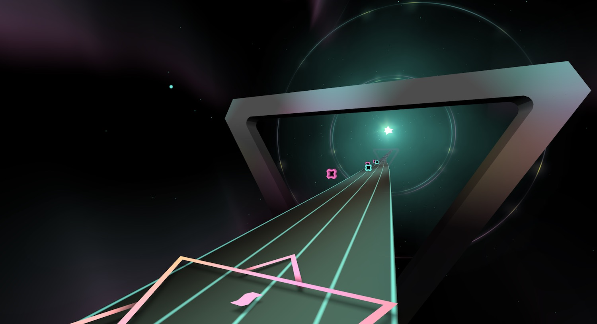

DIEGO F. GOBERNA Technical Artist & Creative Developer
Moonrider
- ThreeJS
- A-Frame
- Javascript
- GLSL
- Blender
Surf the music along the stars and auroras, punch the notes to this WebVR rhythm game.
Design, 3D content, UI, programming of all visuals and GLSL shaders.

I was responsible for the art direction and implementation of all the graphics in this VR experience inspired by BeatSaver. It got around 100,000 users per month for 6 years.
The most interesting aspects of this project are:
- Created in a quite limited time (couple of weeks).
- Since this is meant to be played in the Meta Quest, and in a web browser, we had to work within tight performance and memory constraints
- Very lightweight and performant. The whole experience is less than 10MB (textures are about 1MB, 3D objects are 700KB). This was achived through an extensive use of shaders and tiny textures, for most of the visuals and also for the UI panels. The road is made procedurally, and there are no lights.



